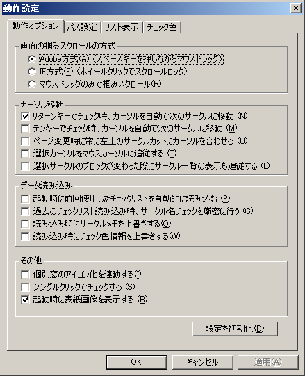
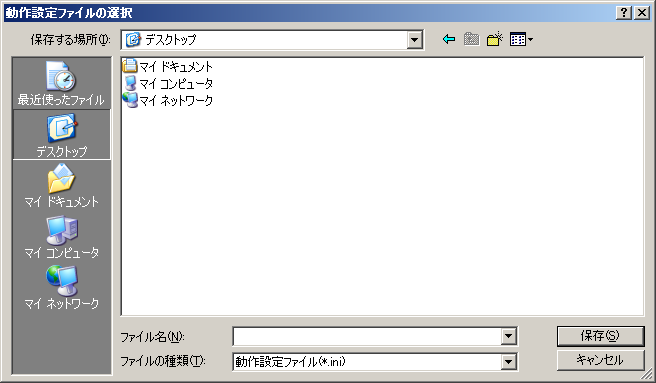

動作設定ダイアログでは、アプリケーションの動作に関して様々な設定を行うことができます。
メインメニューの「ファイル」→「動作設定」で呼び出します。
動作設定ダイアログは、プロパティシート式になっており、以下の3つのグループ（ページ）に分かれています。
各グループの詳細に関しては、それぞれの説明ページを参照してください。
動作設定全般を、ファイルにエクスポート（保存）およびインポート（読み込み）することができます。
別の環境で動作設定を共有したい場合などで使用します。
インポートとエクスポートは、それぞれメインメニューの「ファイル」→「動作設定のエクスポート」または「動作設定のインポート」で呼び出します。

ファイルダイアログから動作設定をインポートまたはエクスポートしたいファイルを選択してください。